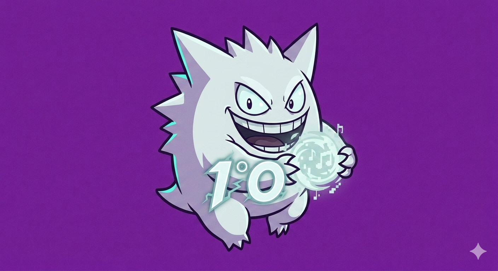

O Que Você Vai Encontrar Por Aqui?
Nossa primeira aula foi o reflexo perfeito da energia do 1° O: marcante, barulhenta e cheia de vida. Embora a maioria da turma tenha demonstrado um interesse genuíno pelo assunto, participando ativamente e trazendo ótimas ideias, o entusiasmo inicial também deu espaço para muita conversa paralela. Entre um debate produtivo e uma risada no fundo da sala, ficou claro que nossa maior força — e também o nosso maior desafio — será canalizar toda essa vibração para construir algo incrível juntos ao longo do ano.
📅 Resumo de Códigos Básicos: Guia Rápido de HTML
Para ajudar todo mundo a colocar a mão na massa no laboratório, aqui está o nosso guia de sobrevivência HTML. Use essas tags para estruturar o seu site!
<h1>até<h6>: 🏷️ Títulos e subtítulos. O<h1>é o principal e maior da página.<p>: ✍️ Parágrafo de texto comum.<strong>: ⚠️ Deixa o texto em negrito para dar destaque.<em>: ✨ Deixa o texto em itálico para dar ênfase.<ul>: 📋 Cria uma lista com marcadores (bolinhas).<ol>: 🔢 Cria uma lista numerada automática (1, 2, 3...).<li>: 🔹 Cada item individual de uma lista (deve ficar dentro de ul ou ol).<br>: ↩️ Quebra de linha simples (não precisa de tag de fechamento).
💡 Dica de ouro: Lembre-se sempre de abrir a tag <tag> e fechar no final do texto usando a barra </tag>!
📅 25 de Junho de 2026 — No encontro de hoje com o 1° O, pudemos observar cenários bem distintos no desenvolvimento dos blogs. Por um lado, já temos alguns alunos evoluindo muito bem na escrita dos códigos e estruturando os sites com autonomia. Por outro lado, uma parcela significativa da turma ainda não demonstrou interesse ou engajamento real com o projeto. Esse diagnóstico nos mostra a necessidade clara de rever a metodologia adotada com o grupo, buscando novas estratégias e dinâmicas que consigam despertar a atenção e conectar todos os estudantes de forma igualitária nas próximas aulas.